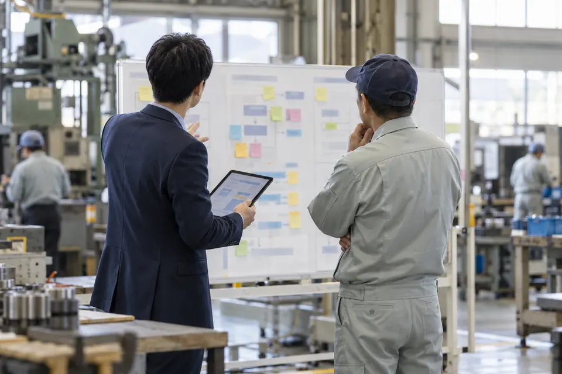

福井の中小企業のAI活用ガイド2026｜何から始め、どこに相談するか

結論福井の中小企業がAIを取り入れるなら、会社全体で一度に始めず、時間のかかっている業務を1つ選んで試すのが近道です。お金をかけるのは後で構いません。ふくい産業支援センターの無料の専門家派遣や、無料のIT相談窓口を使えます。ツールの導入費には、国の「デジタル化・AI導入補助金」の6次締切（2026年10月30日）と、県の「ふくいデジタル導入チャレンジ補助金」の第5次締切（10月末。予算の状況で早く終わる場合あり）が残っています。
この記事の要点
- 従業員100人以下の会社でAIを導入しているのは16.6%。小さな会社ほど、これからの段階です
- 最初は、取引先の書類の書き写しや報告書の下書きなど、時間の測れる事務の仕事から試します
- 進め方は「棚卸し → 1つで試す → 決まりを作る → 広げる」の4段階です
- お金をかける前に、ふくい産業支援センターの無料の窓口と専門家派遣を使えます。国と県の補助金は10月末に締切があります
小さな会社ほど、AIの導入はこれから
情報処理推進機構（IPA）が2026年7月に公表した「DX動向2026」では、調査に答えた企業のうちAIを導入している企業は4割を超えました。ただし、従業員100人以下の企業では2割に届きません。
AIを「導入している」企業の割合（従業員の規模別）
規模による差は、はっきりしています。
使い道は、文書・音声の要約や翻訳（82.5%）、文書やレポートの作成（80.5%）、情報の検索・収集・分析（77.0%）が上位です。効果の中身をたずねた質問では、91.6%が「業務が効率化・迅速化した」と答えた一方、「売上や利益が向上した」は3.9%でした。いまのAIの効果は、まず事務の時間を減らすところに出ています。
福井の会社なら、どこに使えるか
福井の会社なら、取引先から届く書類の書き写しや、報告書の下書きといった事務の仕事から試すのが手堅い入り口です。
福井県では、民間の事業所で働く人のうち製造業で働く人がいちばん多く、2割強（21.6%）を占めます（福井県「令和3年経済センサス-活動調査」）。
県の製造業は、2024年の調査で事業所2,553、従業者7万5,549人、製造品出荷額等2兆6,497億円です。繊維工業は、事業所数・従業者数・出荷額のどれも、県の製造業に占める割合が全国の都道府県で1位です。出荷額がいちばん大きい業種は、電子部品・デバイス・電子回路の製造業です（福井県「令和6年経済構造実態調査（製造業）」）。
製造業の会社では、次のような事務の仕事が、AIを試すのに向いています。どれも、上の調査で使い道の上位に入っている「要約」「文書の作成」「情報の整理」に当たります。
- 取引先ごとに書き方の違う仕様書や注文書から要点を抜き出し、社内の様式に書き写す（繊維や電子部品のように、品番や仕様の多い仕事ほど、手間がかかりやすい）
- 見積書・報告書・日報の下書きを作り、人が確かめて直す
- 会議や打ち合わせの録音から、決まったことと宿題をまとめる
- ベテランが口頭で伝えてきた手順を聞き取り、手順書の下書きにする

何から始めるか：4つの段階
AIのツールを入れても、仕事の進め方が変わらなければ効果は続きません。小さな会社でも、次の4つの段階で進めると手戻りが少なくなります。
AI活用を小さく始めて広げる4つの段階
肝心なのは最初の1つの選び方です。 最初の業務は、だれが見ても結果の良し悪しが分かるものを選びます。正解のない企画書づくりより、決まった様式への書き写しのほうが、効いたかどうかを判断しやすくなります。

社内の決まりは、国のガイドラインを下敷きにする
AIを業務で使う前に、入れてよい情報の範囲と、結果を人が確かめる手順を決めておきます。下敷きには、総務省と経済産業省の「AI事業者ガイドライン」が使えます。最新は第1.2版（2026年3月31日）で、AIを利用する事業者向けの部分と、確かめる項目のチェックリストが別添にあります。
福井県も「生成AI利用ガイドライン」を公開していますが、これは県の職員向けの内容です。会社の決まりを作るときは、国のガイドラインを元にして、自社の業務に合わせて書き足してください。決める項目とそのまま直して使えるひな形は、「生成AIの社内ルールの作り方」にまとめています。
福井の中小企業が使える支援（2026年10月時点）
| 支援 | 中身 | 時期・状況 | 窓口 |
|---|---|---|---|
| DX専門家派遣（ふくい産業支援センター） | ITの専門家を無料で最大3回派遣。業種は問わない | 受付は2026年4月1日〜12月25日 | ふくい産業支援センター |
| 無料IT相談窓口（ふくいDXオープンラボ） | 業務の効率化やAI・IoTの相談を無料で受け付ける。対面とオンライン | 平日と第2・第4土曜 9:00〜17:00 | 0776-67-7404 |
| ふくい産業ＡＸコンソーシアム | AIを業務の効率化にとどめず、経営の変革につなげるための県の集まり。2026年8月26日に設立イベントを開いた | 入会は経営層が対象 | 福井県 経営改革課 0776-20-0537 |
| デジタル化・AI導入補助金2026（国） | ツールの導入費の1/2以内（改定後の最低賃金を下回る賃金で働く従業員が3割以上いる会社は2/3以内）。補助額は5万円以上450万円以下。導入の相談や研修の費用も対象 | 通常枠の6次締切は2026年10月30日17時。IT導入支援事業者と一緒に申請する | コールセンター 0570-666-376 |
| ふくいDX加速化補助金（県） | デジタルツールの導入費の1/2（小規模事業者は2/3）、上限400万円 | 2026年度の募集は6月30日で終了。2次募集はない | 県の事務局 0776-36-4060 |
| ふくいデジタル導入チャレンジ補助金（県） | これからDXに取り組む従業員100人以下の事業者向け。県のカタログにあるツールの導入費の1/2、上限50万円 | 2026年6月10日から受付。最後の第5次の締切は10月末（予算の状況で早く終わる場合がある） | 県の事務局 0776-36-4060 |
| 人材開発支援助成金 事業展開等リスキリング支援コース（国） | 新しい事業や事業の転換に伴って、新しい分野で必要になる研修の経費と、研修中の賃金の一部を助成。業務に直結しない内容、ツールの操作だけを覚える内容、コンサルタントによる指導は対象外 | 2026年度（2027年3月末）までの期間限定の制度 | 福井労働局 助成金センター 0776-22-2683 |
ここは注意が要ります。県のページはAIもデジタルツールの例に挙げていて、チャレンジ補助金のカタログには生成AIのツールも載っています。ただ、使いたいツールが対象になるかどうかは、申請の前に事務局で確かめてください。
相談する順番
費用をかける前に、無料の窓口から使うのがおすすめです。
福井の中小企業がAIを取り入れるときの、相談する順番
県と支援機関の窓口は、どれも相談料がかかりません。社内に進める人がいない場合は、業務の棚卸しから試すところまでを外部と一緒に進める方法もあります。AI よろづやの「AXのみぎ腕」は、福井の会社の中に入って、この4つの段階を一緒に進めるサービスです。
まとめ
- 従業員100人以下の会社でAIを導入しているのは16.6%（IPA「DX動向2026」）。効果は、まず事務の時間を減らすところに出ています
- 福井の会社は、取引先の書類の書き写しや報告書の下書きなど、時間を測れる事務の仕事から試すのが手堅い入り口です
- 「棚卸し → 1つで試す → 決まりを作る → 広げる」の順に進め、社内の決まりは国のAI事業者ガイドラインを下敷きにします
- お金をかける前に、ふくい産業支援センターの無料の窓口と専門家派遣を使い、補助金と助成金は締切と対象を窓口で確かめます
よくある質問
福井県だけの、中小企業のAI活用の割合はありますか？
2026年10月時点で、県や支援機関の公表資料には見当たりませんでした。全国の数字では、IPA「DX動向2026」に答えた従業員100人以下の企業のうち、16.6%がAIを導入しています。
ふくいDX加速化補助金で、AIのツールを入れられますか？
2026年度の募集は6月30日で終わり、2次募集はありません。県のページはAIもデジタルツールの例に挙げていますが、使いたいツールが対象になるかどうかは事務局で確かめてください。今年度中に小さく始めるなら、ふくいデジタル導入チャレンジ補助金（上限50万円、第5次の締切は10月末）のほうが時期が合います（予算の状況で早く終わる場合があります）。
相談だけでも費用はかかりますか？
ふくい産業支援センターの総合相談窓口、ふくいDXオープンラボの無料IT相談窓口、DX専門家派遣（最大3回）は、相談料がかかりません。
出典
- IPA「DX動向2026」の公表資料（2026年7月16日）
- 福井県「令和6年経済構造実態調査（製造業）」
- 福井県「令和3年経済センサス-活動調査」
- 福井県「ふくいDX加速化補助金」
- 福井県「ふくいデジタル導入チャレンジ補助金」
- 福井県 DX関連の補助金・研修の一覧
- 福井県「ふくい産業ＡＸコンソーシアム」
- 福井県 DX推進（生成AI利用ガイドライン）
- ふくい産業支援センター「DX専門家派遣事業」
- ふくい産業支援センター「総合相談窓口」
- ふくいDXオープンラボ「無料IT相談窓口」
- 中小企業基盤整備機構「デジタル化・AI導入補助金2026 通常枠」
- 厚生労働省「人材開発支援助成金」
- 福井労働局「助成金センター」
- 総務省・経済産業省「AI事業者ガイドライン（第1.2版）概要」
監修：静木銀蔵（合同会社BWH総合研究所 代表）
About
AI よろづやについて
AI よろづやは、福井の会社のAI活用を、共に前に進めるサービスです。研修も、制作も、現場の推進も、地元でまとめて引き受けます。運営は合同会社BWH総合研究所です。
ご相談は無料です。自社の業務のどこにAIが使えるか、どのサービスが合うかから一緒に考えます。